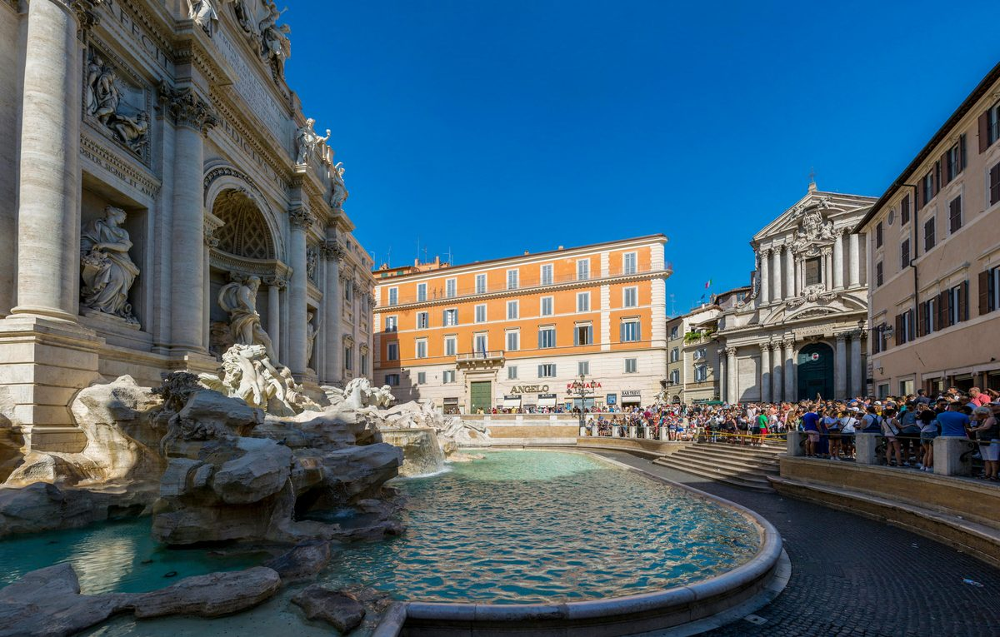

Day 13 — Drive to Rome + Final Dinner
Tuesday, June 2, 2026

PLACES & MAP LINKS — tap any place to open in Google Maps
🏨 Departure — ~10:30 AM — 📍 Hotel Castello di Septe
Slow morning, check out.
🚗 Drop — ~2:00 PM — 📍 BMW Drop-off — Via Giovanni Giolitti 34
Refuel at GRA station before exiting. Confirm drop-off paperwork.
🏨 Hotel — ~2:30 PM — 📍 NH Collection Roma Palazzo Cinquecento
Across from Termini. Booked. Walking distance from BMW drop-off.
🍴 Final dinner — 7:45 PM — 📍 Casa Monti Ristorante
Via Panisperna 210. Indoor dining room reserved. Optional rooftop bar visit after dinner.
SIDE QUESTS
⚡ 📍 Walk to Casa Monti through Monti (parents can join — flat 15-min walk)
Instead of taxi, walk from NH Collection to Casa Monti (~15 min through Monti). Slow pace, take back streets, ivy-covered Roman alleys at dusk. Sit at the restaurant when you arrive.
⚡ 📍 Casa Monti rooftop bar after dinner (parents can join)
After dinner, head up to the rooftop bar for a digestivo. Lit Rome rooftops, beautiful last-night moment. Elevator access. Everyone goes together.
CONTACTS
Casa Monti: +39 06 4522 9523
NOTES
- Pull rental into Termini between 1-3 PM — avoid morning + evening rush.
- From Termini car drop, NH Collection is across the piazza — walking distance with bags.
- Casa Monti is ~10-15 min walk from NH, or short taxi.
- Optional: after dinner, head to Casa Monti rooftop bar for digestivo. Open till midnight.
- Don't plan anything ambitious for evening — final dinner walking distance from hotel.